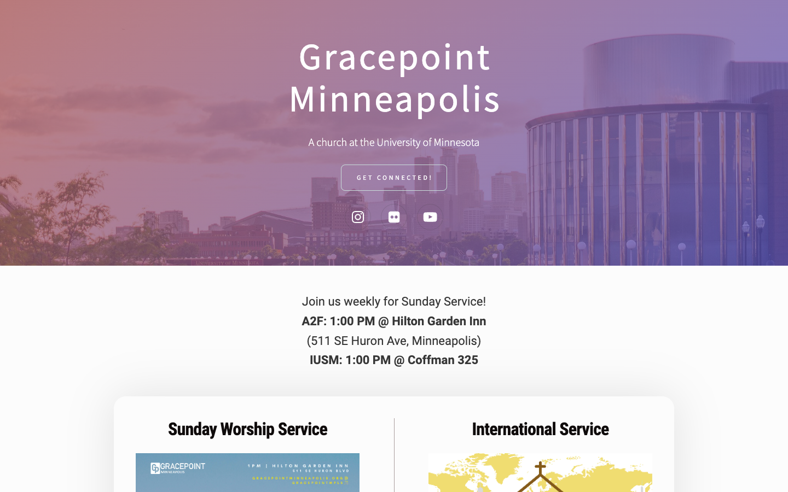
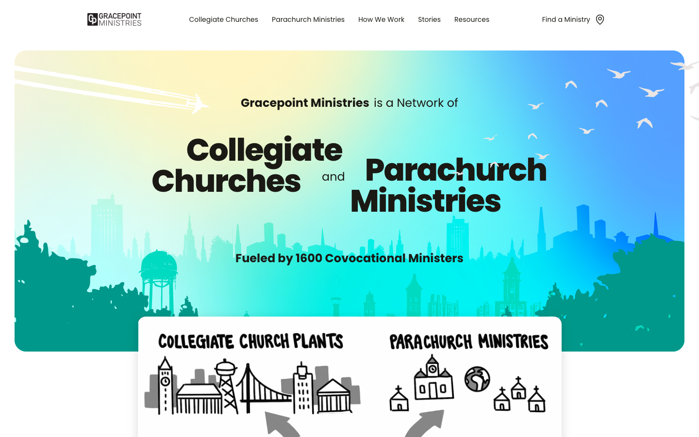
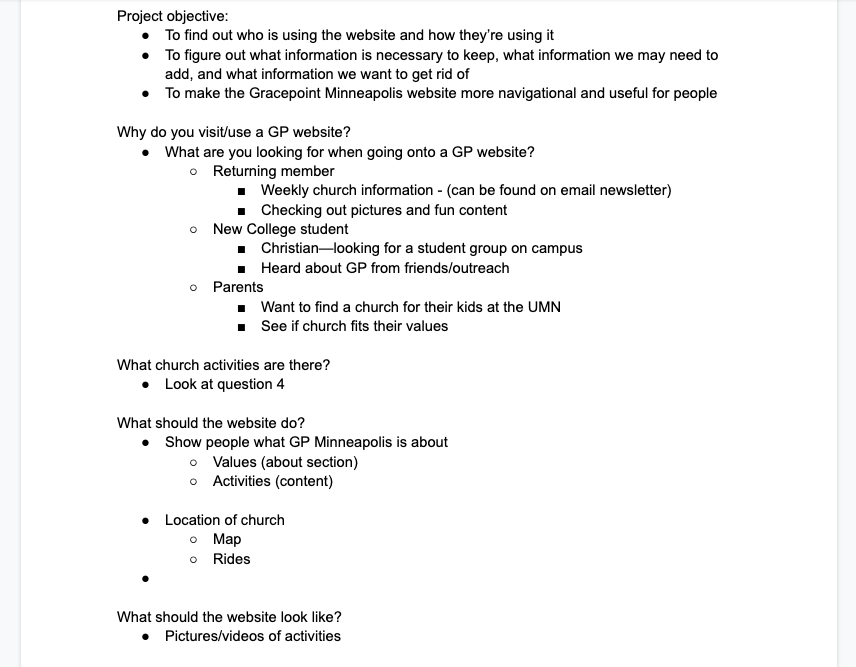
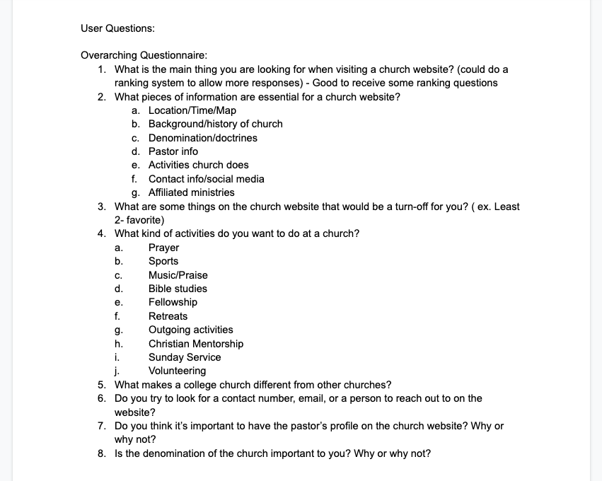

Project information
- Category: Website Redesign
- Client: Gracepoint Minneapolis
- Website: www.gracepointminneapolis.org
- Project date: January 2022 - Present
Updating a Church Website with User-Centered Design
Over the winter break, I had an idea to redesign the website to the church that I go to. It all started when I was curious to see what our church’s website looked like since I had never seen it yet. Upon arriving at the website, I am brought with this:
It was shocking to see that our church’s website looked very underwhelming. This is especially the case since the greater Gracepoint church website looked much different than the Minneapolis one.
For a little more context, Gracepoint is a network of collegiate churches across the U.S. and each city with a local chapter has their own website detailing more local church news. For comparison, the main website that I saw a while ago looks like this:
I asked some of the staff members at our local Gracepoint Minneapolis church if they would be willing to allow me to redesign their website and pitch the new layout to them. They said yes since I pointed out the difference of quality between our local Minneapolis church website to the main church website. Now with the go-ahead, I had to make sure that I am redesigning this website with an understanding of the user’s needs instead of just using my own design opinions.
Observations and Strategy
The first step that I did was to list out all of the poor design choices from the Minneapolis website in comparison to the main Gracepoint website:
- No navigation bar
- Hero section doesn’t cover whole screen
- Main title “Gracepoint Minneapolis” doesn’t look like a headline
- Constantly needing to update website each week with Sunday announcements
- Announcements are small and can easily be missed
- Large unclickable image in middle of site
Then, I did some brainstorming work on what people look for in a church website alongside figuring out what people want to do at church. This is so that when people are interested in joining a collegiate church, they would look at the website as their first point of contact and find the information that they need. For this website redesign project, I needed to find out what information people look for in a church and make sure that it is easily accessible and visible to the user. When that is found, I can apply my findings to the Gracepoint website.
The primary target audience that I wanted to target are college students aged 18-22 years old. Since Gracepoint mainly focuses on reaching out to undergraduate students, this is the primary demographic that the website should cater to. The secondary target audience is the parents of those college students who want to find a college church for their children to attend.
With the help of a friend interested in UX design, we came up with a questionnaire for those target audiences to see what information they are most interested in knowing about a new church.
Afterwards, we wrote the research brief to help guide our process.
Research Objective:
This research is designed to understand how people seek for information about a church on a website. It will uncover insights on how a church website should be structured and what aspects of a church do people who are interested search for.
Methodology:
Surveys, alongside a remote usability test of website prototypes, will be given to participants to complete. The survey will ask people for what they look for in a church. It also contains questions about what information a website for a church should have. The remote usability test will have participants go through various church websites with different design choices to determine which user flow is best suited to give visitors the information that they are seeking.
The participants will be people who are interested in going to a church. They tend to be Christian and want to join a church community or want a loved one to go. The participants will consist of friends and family from the Gracepoint church network, alongside people outside of that network to avoid bias. Since Gracepoint Minneapolis is a college undergraduate church, the participants will be aged 18-24 years of age or a parent who has children around that age bracket. This will give the best representation of the target audience for the Gracepoint Minneapolis website.
To be Continued…
This is an ongoing project that is expected to be completed by March, 2023. The next steps will be to finalize the survey questions and start sending them out to the participants listed in the research brief. Once we get the survey results back, we will structure the usability test protocol to see which website layout works best. This will be done by using example Gracepoint websites from other local chapters and figure out which layout is best for the Minneapolis website. We will test the websites both on a laptop and on a mobile phone to cover all visual experiences.
Some design choices that we are looking for answers are:
- Fullscreen vs Partial Hero Section
- Image vs Video Hero Section
- Single page vs Multi-page Website
- Wide vs Narrow Side Margins
- What to Put in Navigation Bar
When all the research is complete, I will determine which website design layout would work best for the Gracepoint Minneapolis website and present my findings to the stakeholders.